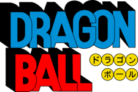
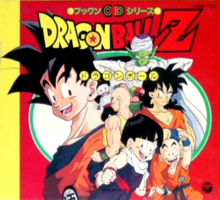
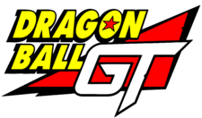

Dragon Ball

The series begins with a young monkey-tailed boy named Goku befriending a teenage girl named Bulma.
Together they go on a quest to find the seven Dragon Balls (ドラゴンボール?), which summons the dragon Shenlong
to grant the user one wish. The journey leads to a confrontation with the shape-shifting pig Oolong, as
well as a desert bandit named Yamucha and his companion Pu'ar, with all later becoming allies; Chi-Chi,
whom Goku unknowingly agrees to marry; and Pilaf, an impish man who seeks the Dragon Balls to fulfill
his desire to rule the world. After Oolong stops Pilaf from using the Dragon Balls by wishing for a pair
of panties, Goku undergoes rigorous training regimes under the martial artist Kame-Sennin in order to
fight in the Tenkaichi Budōkai (天下一武道会?, "Strongest Under the Heavens Martial Arts Tournament") that
attracts the most powerful fighters in the world. A monk named Kuririn becomes his training partner and
rival, but they soon become best friends. After the tournament, Goku sets out on his own to recover the
Dragon Ball his grandfather left him and encounters the Red Ribbon Army, whose leader wants to collect
the Dragon Balls for himself. He almost single-handedly defeats the army, including their hired assassin
Taopaipai, whom he originally lost to, but after training under the hermit Karin, now easily beats. Goku
reunites with his friends to defeat the fortuneteller Baba Uranai's fighters and have her locate the
last Dragon Ball in order to revive a friend killed by Taopaipai.
They all reunite at the Tenkaichi Budōkai three years later and meet Kame-Sennin's rival and Taopaipai's
brother, Tsuru-Sennin, and his students Tenshinhan and Chaozu, who vow to exact revenge. Kuririn is
killed after the tournament and Goku tracks and is defeated by his killer, Piccolo Daimao. The samurai
Yajirobe takes Goku to Karin, where he receives healing and a power boost. Meanwhile, Piccolo fights
Kame-Sennin and Chaozu, leading to both their deaths, and uses the Dragon Balls to regain his youth
before destroying Shenlong. As Piccolo Daimao prepares to destroy West City, Tenshinhan attempts to
defeat him, but is beaten and nearly killed. Goku arrives in time to save him, then begins his battle
with Piccolo Daimao, who, just before dying, spawns his son/reincarnation Piccolo. Karin informs Goku
that Kami (God), the original creator of the Dragon Balls, might be able to restore Shenlong so that he
can wish his friends back to life, which he does. He also stays and trains under Kami for the next three
years, once again reuniting with his friends at the Tenkaichi Budōkai. Piccolo Jr. also enters the
tournament to avenge his father, leading to the final fight between him and Goku. After Goku narrowly
wins, he leaves with Chi-Chi and keeps his promise to marry her.
Dragon Ball Z

Dragon Ball Z picks up five years after the end of the Dragon Ball anime, with Goku as a young adult and
father to his son Gohan. A humanoid alien named Raditz arrives on Earth in a spacecraft and tracks down
Goku, revealing to him that he is his long-lost big brother and that they are members of a nearly
extinct extraterrestrial race called the Saiyans (サイヤ人 Saiya-jin?). The Saiyans had sent Goku
(originally named "Kakarrot") to Earth as an infant to conquer the planet for them, but he suffered a
severe head injury soon after his arrival and lost all memory of his mission, as well as his
blood-thirsty Saiyan nature. Goku refuses to help Raditz continue the mission, which results in Raditz
kidnapping Gohan. Goku decides to team up with his former enemy Piccolo in order to defeat Raditz and
save his son, while sacrificing his own life in the process. In the afterlife, Goku trains under King
Kai until he is revived by the Dragon Balls a year later in order to save the Earth from Raditz'
comrades; Nappa and the Saiyan prince Vegeta. During the battle Piccolo is killed, along with Goku's
allies Yamcha, Tien Shinhan and Chiaotzu, and the Dragon Balls cease to exist because of Piccolo's
death. Goku arrives at the battlefield late, but avenges his fallen friends by defeating Nappa with his
new level of power. Vegeta himself enters into the battle with Goku and after numerous clashes Goku
manages to defeat him as well, with the help of Gohan and his best friend Krillin. At Goku's request,
they spare Vegeta's life and allow him to escape Earth. During the battle, Krillin overhears Vegeta
mentioning the original set of Dragon Balls from Piccolo's home planet Namek (ナメック星 Namekku-sei?). While
Goku recovers from his injuries at the hospital, Gohan, Krillin and Goku's oldest friend Bulma depart
for Namek in order to use these Dragon Balls to revive their dead friends. However, they discover that
Vegeta's superior, the galactic tyrant Lord Frieza, is already there, seeking the Dragon Balls to be
granted eternal life. A fully healed Vegeta arrives on Namek as well, seeking the Dragon Balls for
himself, which leads to several battles between him and Frieza's henchmen. Realizing he is overpowered,
Vegeta teams up with Gohan and Krillin to fight the Ginyu Force, a team of mercenaries summoned by
Frieza. After Goku finally arrives on Namek, the epic battle with Frieza himself comes to a close when
Goku transforms into a fabled Super Saiyan (超サイヤ人 Sūpā Saiya-jin?) and defeats him.
Upon his return to Earth a year later, Goku encounters a time traveler named Trunks, the future son of
Bulma and Vegeta, who warns Goku that two Androids (人造人間 Jinzōningen?, "Artificial Humans") will appear
three years later, seeking revenge against Goku for destroying the Red Ribbon Army when he was a child.
During this time, an evil life form called Cell emerges and after absorbing two of the Androids to
achieve his "perfect form," holds his own fighting tournament to decide the fate of the Earth. After
Goku sacrifices his own life a second time, to no avail, Gohan avenges his father by defeating Cell
after ascending to the second level of Super Saiyan. Seven years later Goku, who has been briefly
revived for one day and meets his youngest son Goten, and his allies are drawn into a fight against a
magical being named Majin Buu. After numerous battles resulting in the destruction and recreation of the
Earth, Goku (whose life is permanently restored by the Elder Kai) destroys Kid Buu with a "Spirit Bomb"
attack containing the energy of everyone on Earth. Goku makes a wish for Kid Buu to be reincarnated as a
good person and ten years later, at another martial arts tournament, Goku meets Kid Buu's human
reincarnation, Uub. Leaving the match between them unfinished, Goku departs with Uub to train him to
become Earth's new guardian.
Dragon Ball GT

Five years after the end of the Dragon Ball Z anime (10 years in the Funimation dub),[1] Goku is turned
back into a child by the Black Star Dragon Balls (ダークドラゴンボール Dāku Doragon Bōru, lit. "Dark Dragon
Balls") used by Pilaf and is forced to travel across the universe to retrieve them along with his
granddaughter Pan and Trunks. The trio go through various adventures in their journey to find the Black
Star Dragon Balls, until they encounter the evil artificial Tuffle, Baby, who intends to destroy the
Saiyan race.
Baby has the ability to invade other people's bodies and turn them into Tuffles, as well as using a body
to combine it with his own power and become a fighter. After turning practically all of the Earth's
population, including the Saiyans, into Tuffles, Baby decides to remain inside Vegeta's body and use it
to confront Goku. Goku fights him and is defeated, but after having his tail regenerated, achieves the
level of Super Saiyan 4 (超サイヤ人フォー Sūpā Saiya-jin Fō), and destroys Baby, propelling him into the sun
with a Kamehameha. Piccolo then sacrifices himself to turn the Black Star Dragon Balls into stone
permanently when the Earth explodes after Goku and the others helped everyone evacuate to the Tuffle
Planet.
A year after Baby's defeat, Dr. Myuu (Baby's creator) and Dr. Gero (creator of the Red Ribbon Army
androids), create a replica of Android 17 and have it fuse with the original Android 17, creating Super
17. Super 17 at first seems impervious to Goku's attacks, but when Android 18 attacks him for killing
Krillin, Goku takes advantage of the distraction to penetrate through Super 17 with his Dragon Fist
technique, then fires a Kamehameha through the wound.
Due to overuse of the Dragon Balls, seven Shadow Dragons are then created. All but the most powerful, Syn
Shenron, are defeated. Syn Shenron appears to be losing until he absorbs the Dragon Balls and gains more
power, becoming Omega Shenron and overwhelming Goku. Goku is about to sacrifice himself to destroy the
evil dragon, but then Vegeta turns up in Super Saiyan 4 form, thanks to Bulma's new device, the Blutz
Wave Generator. Goku and Vegeta fuse, creating Gogeta, who uses his immense power to taunt Omega
Shenron. However, their fusion then ends and Goku loses his Super Saiyan 4 form along with Vegeta.
Eventually, using the energy of every living being in the universe, Goku makes a Spirit Bomb powerful
enough to destroy Omega Shenron.
The real Shenlong appears to grant Goku and his friends one last wish, and then proceeds to disappear —
along with Goku and the Dragon Balls. Several decades later, Goku's great-great-grandson, Goku Jr.,
participates in the World Tournament as his grandmother Pan cheers for him. Pan then sees Goku and tries
to approach him but Goku disappears into the crowd. Goku then leaves the World Tournament with a
flashback of his timeline. After the flashback of his timeline ends, Goku then catches his power pole
and rides off on his nimbus cloud.
Dragon Ball GT sucked!!!